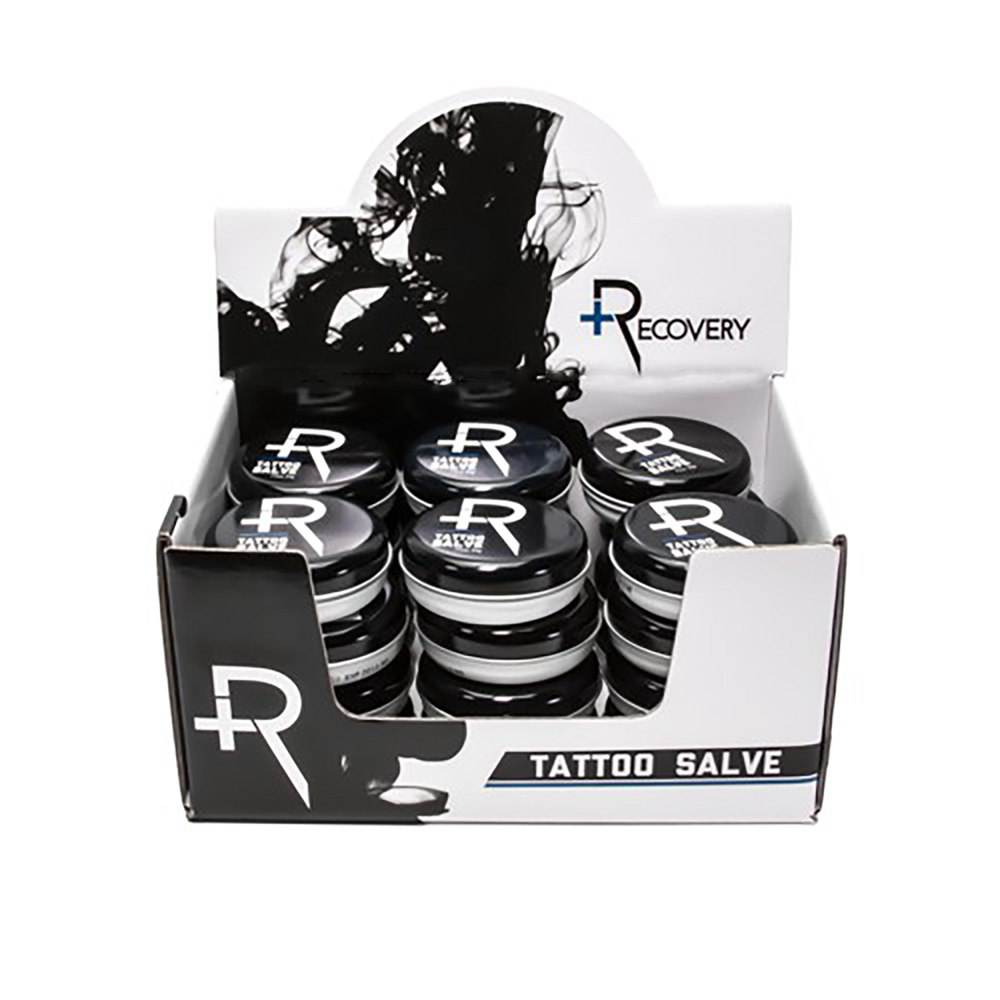
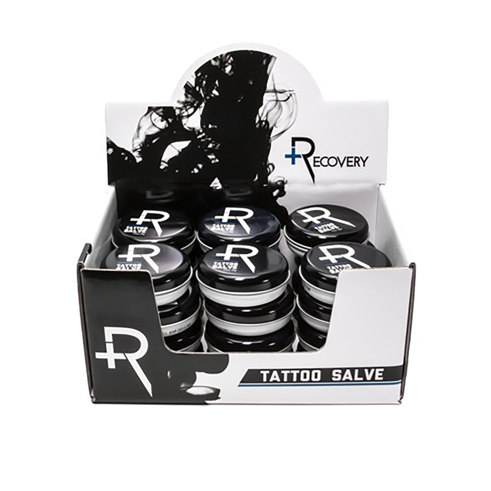

RECOVERY AFTERCARE, TATTOO
Recovery Tattoo Salve is a product to use before / during / and after tattooing. Recovery Tattoo Aftercare is branded with ink billows and contrast of black and white, which were the earliest tattoo pigments used.
 Recovery Tattoo Salve is a product to use before / during / and after tattooing. Recovery Tattoo Aftercare is branded with ink billows and contrast of black and white, which were the earliest tattoo pigments used.
